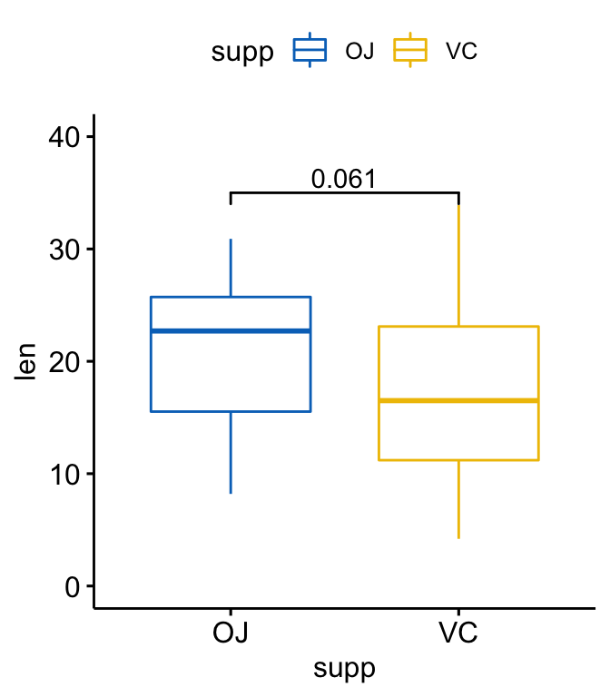
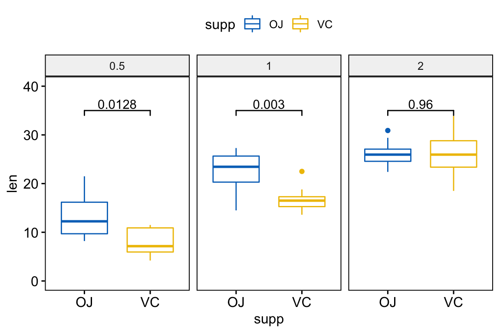
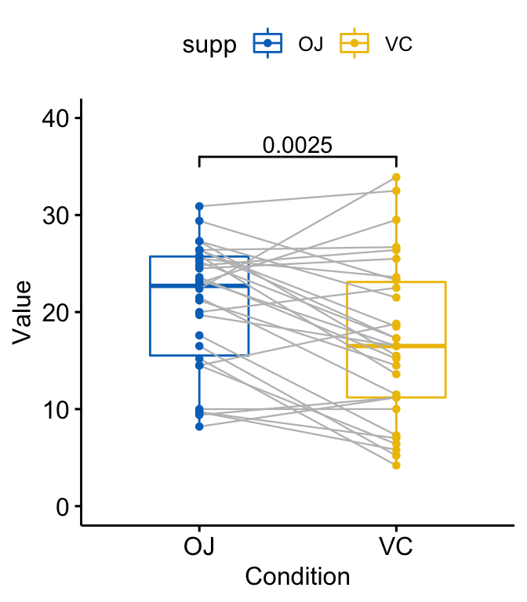
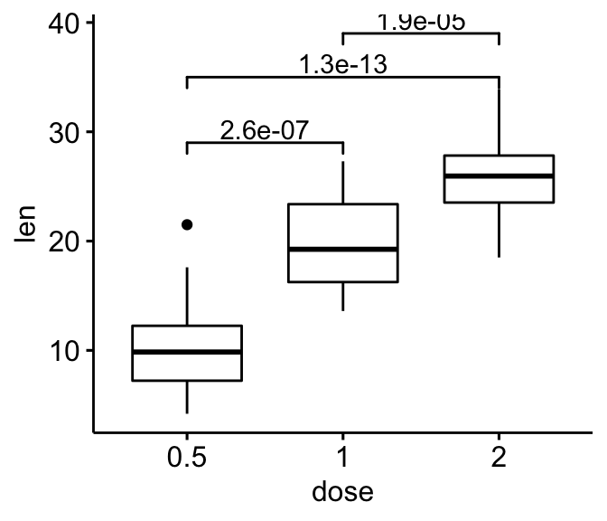
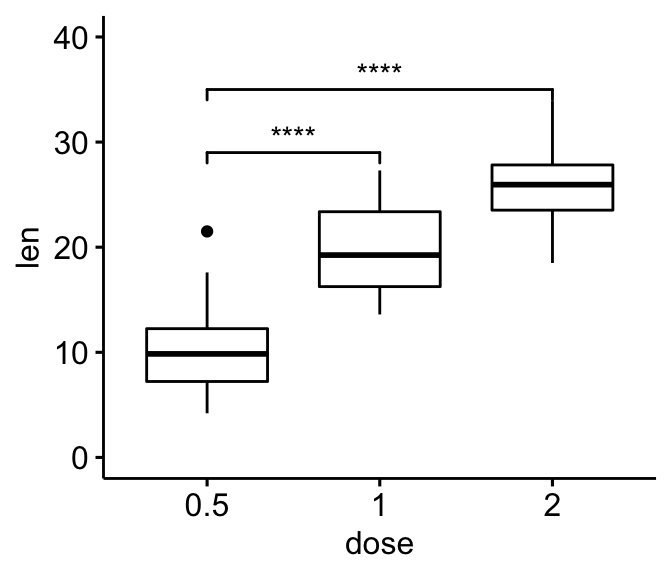
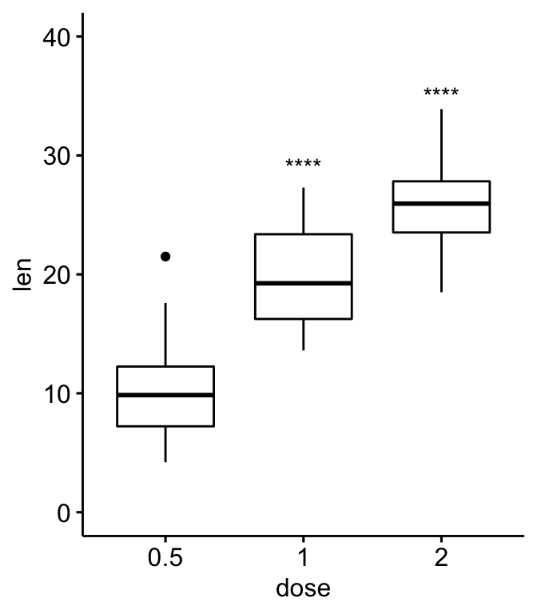
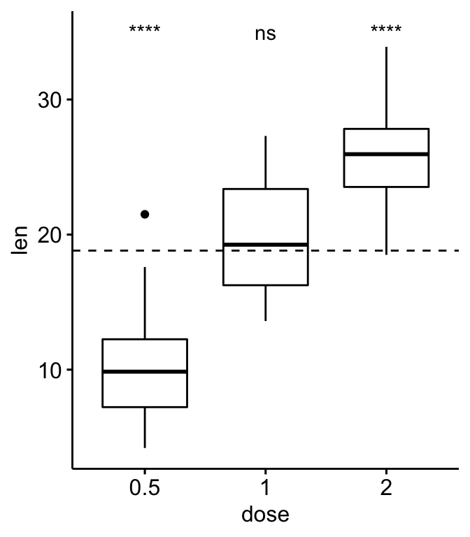

Provides a pipe-friendly framework to perform easily basic statistical tests in R. The output of each test is automatically transformed into a tidy data frame to facilitate visualization.
The main functions are listed below.
Comparing means:
-
t_test(): performs one-sample, two-sample and pairwise t-tests -
wilcox_test(): performs one-sample, two-sample and pairwise Wilcoxon tests -
anova_test(): wrapper aroundcar:Anova()to perform Anova test -
kruskal_test(): performs kruskal-wallis rank sum test -
tukey_hsd()andtukey_hsd2(): performs tukey post-hoc tests
Correlation analysis:
-
cor_test(): correlation test between two variables using Pearson, Spearman or Kendall methods.
Adjusting p-values and adding significance symbols:
-
adjust_pvalue(): add an adjusted p-values column to a data frame containing statistical test p-values -
add_significance(): add a column containing the p-value significance level
Installation and loading
- Install the latest version from GitHub as follow:
# Install
if(!require(devtools)) install.packages("devtools")
devtools::install_github("kassambara/rstatix")- Loading packages
library(rstatix)
library(ggpubr) # For easy data-visualizationComparing means
To compare the means of two groups, you can use either the function t_test() (parametric) or wilcox_test() (non-parametric). In the following example the t-test will be illustrated.
Data
Preparing the demo data set:
df <- ToothGrowth
df$dose <- as.factor(df$dose)
head(df)
#> len supp dose
#> 1 4.2 VC 0.5
#> 2 11.5 VC 0.5
#> 3 7.3 VC 0.5
#> 4 5.8 VC 0.5
#> 5 6.4 VC 0.5
#> 6 10.0 VC 0.5Compare two independent groups
- Create a simple box plot with p-values:
# T-test
stat.test <- df %>%
t_test(len ~ supp, paired = FALSE)
stat.test
#> # A tibble: 1 x 6
#> .y. group1 group2 statistic p method
#> <chr> <chr> <chr> <dbl> <dbl> <chr>
#> 1 len OJ VC 1.92 0.061 T-test
# Create a box plot
p <- ggboxplot(
df, x = "supp", y = "len",
color = "supp", palette = "jco", ylim = c(0,40)
)
# Add the p-value manually
p + stat_pvalue_manual(stat.test, label = "p", y.position = 35)
- Customize labels using glue expression:
p +stat_pvalue_manual(stat.test, label = "T-test, p = {p}",
y.position = 36)
- Grouped data: compare supp levels after grouping the data by “dose”
# Statistical test
stat.test <- df %>%
group_by(dose) %>%
t_test(len ~ supp) %>%
adjust_pvalue() %>%
add_significance("p.adj")
stat.test
#> # A tibble: 3 x 9
#> dose .y. group1 group2 statistic p method p.adj p.adj.signif
#> <fct> <chr> <chr> <chr> <dbl> <dbl> <chr> <dbl> <chr>
#> 1 0.5 len OJ VC 3.17 0.0064 T-test 0.0128 *
#> 2 1 len OJ VC 4.03 0.001 T-test 0.003 **
#> 3 2 len OJ VC -0.0461 0.96 T-test 0.96 ns
# Visualization
ggboxplot(
df, x = "supp", y = "len",
color = "supp", palette = "jco", facet.by = "dose",
ylim = c(0, 40)
) +
stat_pvalue_manual(stat.test, label = "p.adj", y.position = 35)
Compare paired samples
# T-test
stat.test <- df %>%
t_test(len ~ supp, paired = TRUE)
stat.test
#> # A tibble: 1 x 6
#> .y. group1 group2 statistic p method
#> <chr> <chr> <chr> <dbl> <dbl> <chr>
#> 1 len OJ VC 3.30 0.0025 T-test
# Box plot
p <- ggpaired(
df, x = "supp", y = "len", color = "supp", palette = "jco",
line.color = "gray", line.size = 0.4, ylim = c(0, 40)
)
p + stat_pvalue_manual(stat.test, label = "p", y.position = 36)
Compare more than two groups
- Pairwise comparisons: if the grouping variable contains more than two categories, a pairwise comparison is automatically performed.
# Pairwise t-test
pairwise.test <- df %>% t_test(len ~ dose)
pairwise.test
#> # A tibble: 3 x 9
#> .y. group1 group2 statistic p method p.adj p.signif
#> <chr> <chr> <chr> <dbl> <dbl> <chr> <dbl> <chr>
#> 1 len 0.5 1 -6.48 1.30e- 7 T-test 2.60e- 7 ****
#> 2 len 0.5 2 -11.8 4.40e-14 T-test 1.30e-13 ****
#> 3 len 1 2 -4.90 1.90e- 5 T-test 1.90e- 5 ****
#> # ... with 1 more variable: p.adj.signif <chr>
# Box plot
ggboxplot(df, x = "dose", y = "len")+
stat_pvalue_manual(
pairwise.test, label = "p.adj",
y.position = c(29, 35, 39)
)
- Multiple pairwise comparisons against reference group: each level is compared to the ref group
# Comparison against reference group
#::::::::::::::::::::::::::::::::::::::::
# T-test: each level is compared to the ref group
stat.test <- df %>% t_test(len ~ dose, ref.group = "0.5")
stat.test
#> # A tibble: 2 x 9
#> .y. group1 group2 statistic p method p.adj p.signif
#> <chr> <chr> <chr> <dbl> <dbl> <chr> <dbl> <chr>
#> 1 len 0.5 1 -6.48 1.30e- 7 T-test 1.30e- 7 ****
#> 2 len 0.5 2 -11.8 4.40e-14 T-test 8.80e-14 ****
#> # ... with 1 more variable: p.adj.signif <chr>
# Box plot
ggboxplot(df, x = "dose", y = "len", ylim = c(0, 40)) +
stat_pvalue_manual(
stat.test, label = "p.signif",
y.position = c(29, 35)
)
# Remove bracket
ggboxplot(df, x = "dose", y = "len", ylim = c(0, 40)) +
stat_pvalue_manual(
stat.test, label = "p.signif",
y.position = c(29, 35),
remove.bracket = TRUE
)
- Multiple pairwise comparisons against all (base-mean): Comparison of each group against base-mean.
# T-test
stat.test <- df %>% t_test(len ~ dose, ref.group = "all")
stat.test
#> # A tibble: 3 x 9
#> .y. group1 group2 statistic p method p.adj p.signif
#> <chr> <chr> <chr> <dbl> <dbl> <chr> <dbl> <chr>
#> 1 len all 0.5 5.82 2.90e-7 T-test 8.70e-7 ****
#> 2 len all 1 -0.660 5.10e-1 T-test 5.10e-1 ns
#> 3 len all 2 -5.61 4.30e-7 T-test 8.70e-7 ****
#> # ... with 1 more variable: p.adj.signif <chr>
# Box plot with horizontal mean line
ggboxplot(df, x = "dose", y = "len") +
stat_pvalue_manual(
stat.test, label = "p.signif",
y.position = 35,
remove.bracket = TRUE
) +
geom_hline(yintercept = mean(df$len), linetype = 2)